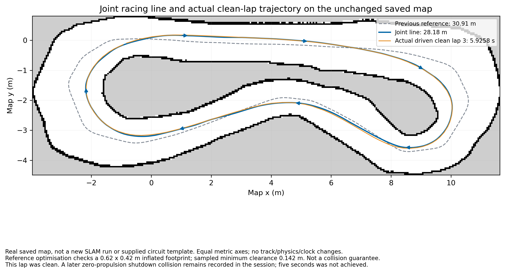
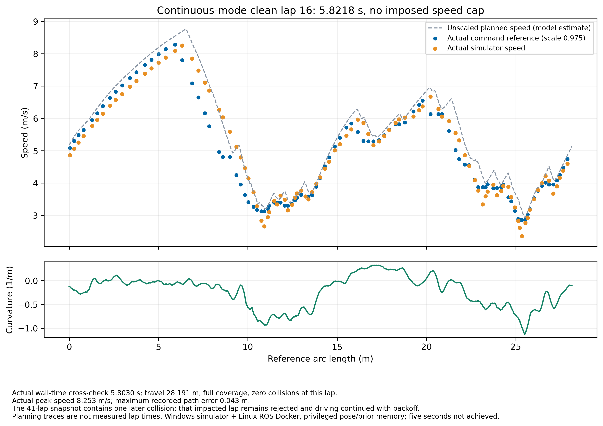
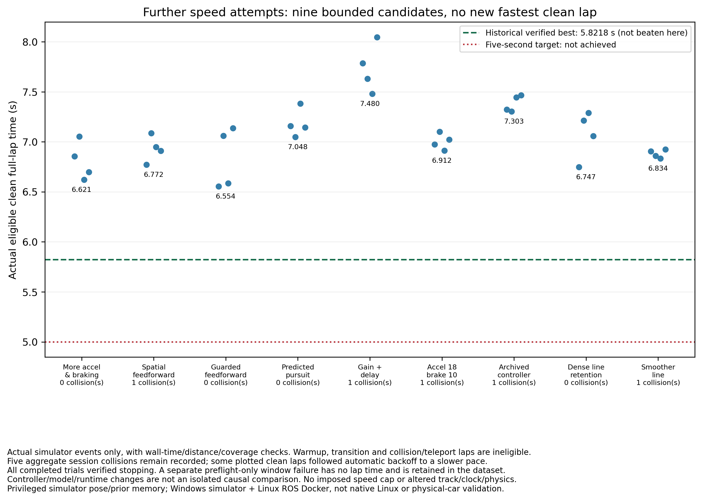

Historical best eligible clean full lap
5.8218 seconds
Five seconds has not been achieved. This is an actual result from lap 16 of onefile-20261027T132154Z: simulator time 5.821800 seconds, wall-time cross-check 5.802971 seconds, travel 28.1909 m and full coverage, with zero recorded collisions at that lap. It is a historical individual-clean-lap result, not a guaranteed pace or the current state of a live run.
The saved 41-lap follow-up had 24 eligible clean full laps and one later collision, with driving continuing after backoff. Only one eligible lap in that snapshot was below six seconds. The completed session and later collisions remain recorded; this is not an entirely collision-free-session claim.
No new record is claimed from the latest follow-up. Nine additional bounded candidates were slower or collided; their best eligible lap was 6.5537 s. The selected default path/profile values were verified equal to the historical 5.8218 s setup. Planner, startup and tuning robustness fixes are not proof of faster laps.
Latest downloads
All custom driving logic is in one Python file. Docker, ROS/NumPy/OpenCV images, the unmodified official simulator and genuine saved map/track memory remain external dependencies. The small archive contains only the executable Python file, not those dependencies. Existing machine-specific Windows .lnk shortcuts are intentionally not distributed.
The measured-run source hash and current download hash are both recorded in the provenance file. The implementation has changed since that measured lap; only the default exported path/profile values are regression-checked equal. Do not treat the whole controller as unchanged or the current code as a new record validation.
What is selected in this release?
- No imposed command-speed ceiling:
--max-speed 0is the default. Curvature, modelled grip, motor acceleration/braking, finite commands and actuator saturation still constrain driving. - Joint planning uses the genuine saved free-space corridor, a sampled inflated footprint, cyclic acceleration/braking constraints and a combined grip model. A valid original final line is preserved; if the last coarse candidate fails dense validation, a prior densely feasible improvement is retained rather than discarding the whole search. No selected line bypasses the final checks.
- Continuous pacing holds at least three eligible clean laps before using recent lap medians to propose a change. Fastest individual clean laps remain separately recorded; the search does not prove a global optimum.
- The proven command-derived acceleration feedforward, 0.04 s preview and measured-origin linear pursuit remain defaults. Spatial feedforward, larger steering-delay compensation and other slower tested variants are explicit experimental options, not promoted as faster defaults.
- Windows guards handle missing old process IDs, blank/hover-dimmed UI frames and transient window bounds. STOP commands zero propulsion while retaining curve-following steering during coasting; unverified stopping closes only the owned simulator.
Genuine recorded track map



Actual speed profile: 5.8218-second lap


Slower and failed trials are retained

The newer continuous validation snapshot had 18 simulator laps, 13 eligible clean full laps, zero collisions and a session best of 6.0287 s while still running with median-based tuning. It is a historical observation, not a current live feed or an endurance guarantee. See the downloadable evidence and follow-up results for exact scope.
Download the full follow-up explanation · Earlier 6.9607-second release archive
Use with the existing simulator setup
Windows
- Stop the old run and close its simulator before switching controllers. Do not run the older
RUN_CONTINUOUS.batalongside the one-file mode. - Place the latest
ONEFILE_RACER.pyin the existing Capstone project root, replacing the older copy after keeping a backup. - Use the existing Windows RoboRacer One-File Start shortcut. Use RoboRacer One-File STOP to stop. The repaired shortcuts show startup diagnostics rather than hiding errors in a minimized window.
- The running launcher opens the local STOP/status dashboard at
http://localhost:14999. That address is on your own simulator PC, not this website.
The existing Windows setup requires the Ubuntu WSL distribution, Python, Docker Desktop/Linux ROS dependency image, official project Windows simulator and genuine saved track memory. Downloading this file alone does not install them or create machine-specific shortcuts.
Native Ubuntu
- Use the existing extracted
RoboRacer_Native_Linuxkit. Stop and close its old run. - Extract
ONEFILE_RACER.tar.gzdirectly inside the kit, besidekit-manifest.json. Keep the existing images and evidence/data folders. - Right-click the executable Python file and choose Run as a Program. It creates application-menu RoboRacer One-File Start/STOP entries and starts the new mode.
Native x86_64 Linux, Docker permission, X11/Xwayland authorization and hardware Vulkan are required. Missing hardware Vulkan fails closed rather than silently using Windows or software rendering. Native GPU/UI driving must be validated on the target PC.
Timing, recovery and limits
- Crash-triggered stopping is off by default. Collisions are recorded; impacted laps are ineligible, speed backs off and driving continues. A collision-induced stationary stall may request an official reset.
- Proximity and predictive stopping-speed governors are bypassed. Explicit STOP, stale-data checks, host-liveness lease and an independent heartbeat watchdog remain active. These do not guarantee collision avoidance.
- Eligible full laps require actual simulator finish/time events, a previous finish, sufficient measured travel/coverage and wall-time agreement. Warmup, collision, teleport and flagged tuning-transition laps are rejected.
- Clean full laps from a session that contains another collision are individual-clean-lap results, not an all-clean-session claim.
- No simulator clock, circuit, lap-counter or vehicle-physics changes were used. Repeated clean-lap medians guide pacing; the fastest individually eligible lap is tracked separately. Neither establishes a global optimum or guaranteed improvement.
- STOP/fault termination does not blindly rearm. Never use this direct-actuator benchmark on a physical vehicle.
Review the source on GitHub · Review exact lap evidence and artifact hashes